Full factorial of charge current, voltage cutoff, trickle threshold, and temperature limit to maximize capacity and cycle life
| Factor | Low | High | Unit |
|---|---|---|---|
charge_c | 0.5 | 2.0 | C |
cutoff_v | 4.15 | 4.25 | V |
trickle_pct | 3 | 10 | % |
temp_limit_c | 35 | 50 | C |
Fixed: chemistry = LiPo, cells = 3S
| Response | Direction | Unit |
|---|---|---|
capacity_pct | ↑ maximize | % |
cycle_life | ↑ maximize | cycles |
The Full Factorial Design produces 16 runs. Each row is one experiment with specific factor settings.
| Run | charge_c | cutoff_v | trickle_pct | temp_limit_c |
|---|---|---|---|---|
| 1 | 0.5 | 4.25 | 10 | 50 |
| 2 | 2.0 | 4.15 | 3 | 50 |
| 3 | 0.5 | 4.25 | 3 | 50 |
| 4 | 0.5 | 4.25 | 10 | 35 |
| 5 | 2.0 | 4.25 | 10 | 35 |
| 6 | 2.0 | 4.15 | 10 | 35 |
| 7 | 2.0 | 4.25 | 3 | 35 |
| 8 | 2.0 | 4.15 | 3 | 35 |
| 9 | 0.5 | 4.15 | 3 | 50 |
| 10 | 0.5 | 4.15 | 10 | 35 |
| 11 | 2.0 | 4.25 | 3 | 50 |
| 12 | 2.0 | 4.25 | 10 | 50 |
| 13 | 0.5 | 4.25 | 3 | 35 |
| 14 | 2.0 | 4.15 | 10 | 50 |
| 15 | 0.5 | 4.15 | 3 | 35 |
| 16 | 0.5 | 4.15 | 10 | 50 |
| Feature | Value |
|---|---|
| Design type | full_factorial |
| Factor types | continuous (all 4) |
| Arg style | double-dash |
| Responses | 2 (capacity_pct ↑, cycle_life ↑) |
| Total runs | 16 |
Generated from actual experiment runs using the DOE Helper Tool.
Top factors: charge_c (51.4%), cutoff_v (26.4%), temp_limit_c (18.1%).
Pareto Chart
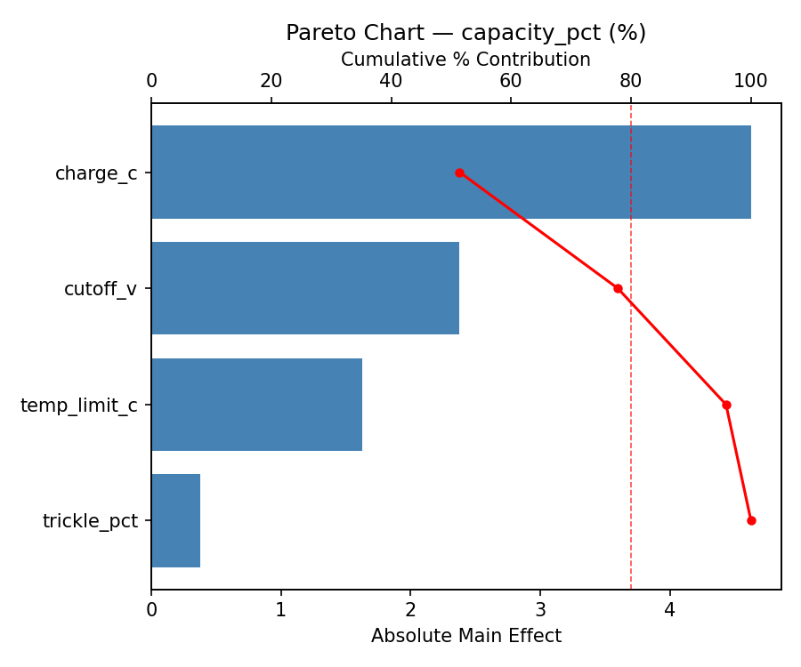
Main Effects Plot
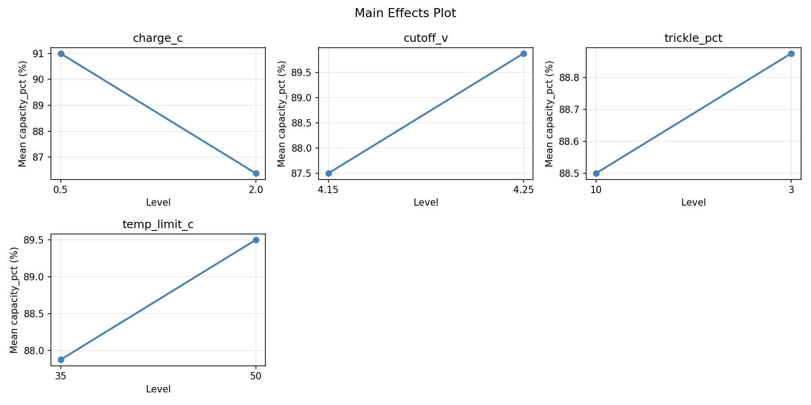
Top factors: charge_c (44.6%), temp_limit_c (27.5%), cutoff_v (22.6%).
Pareto Chart
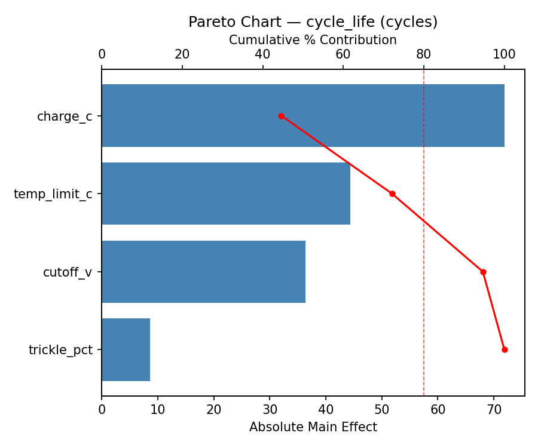
Main Effects Plot
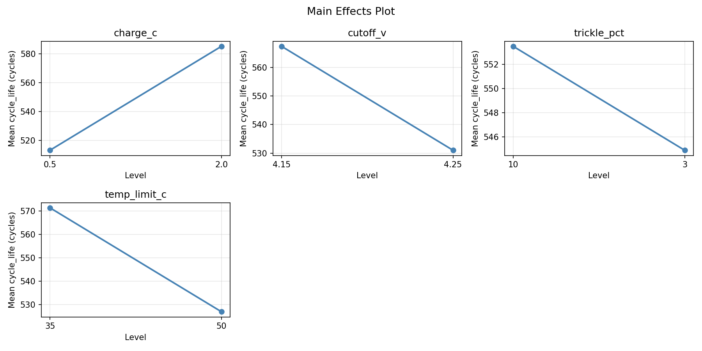
3D surfaces fitted with quadratic RSM. Red dots are observed data points.
capacity pct charge c vs cutoff v
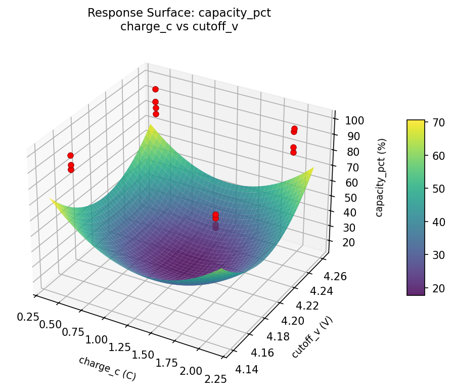
capacity pct charge c vs temp limit c
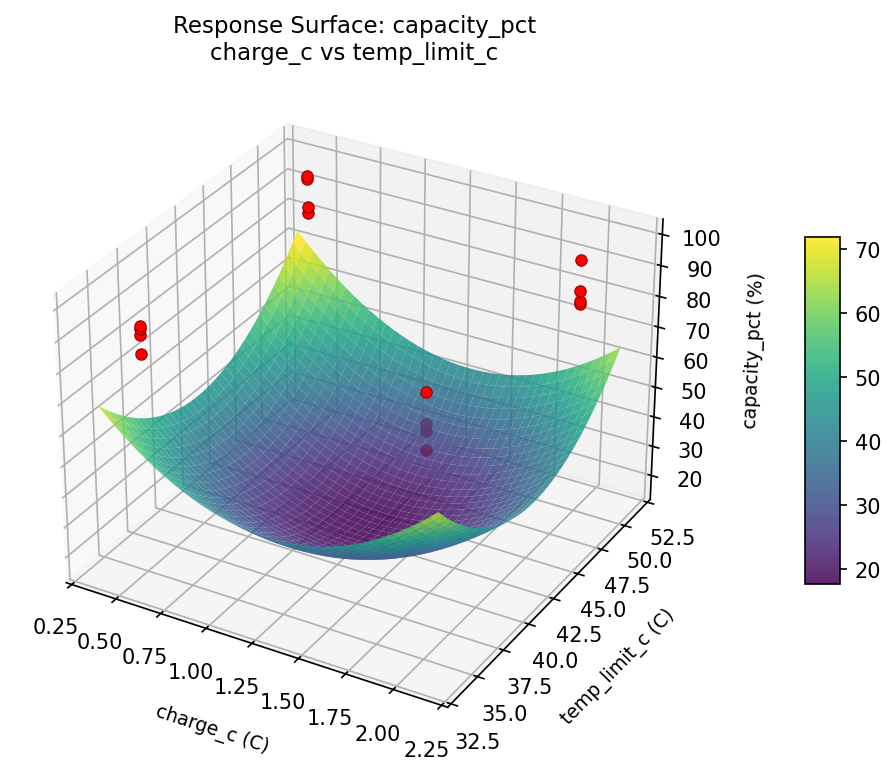
capacity pct charge c vs trickle pct
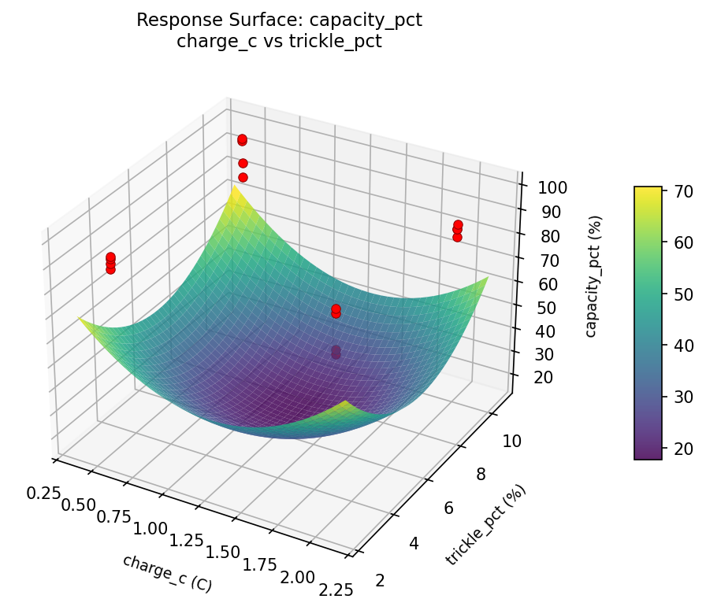
capacity pct cutoff v vs temp limit c
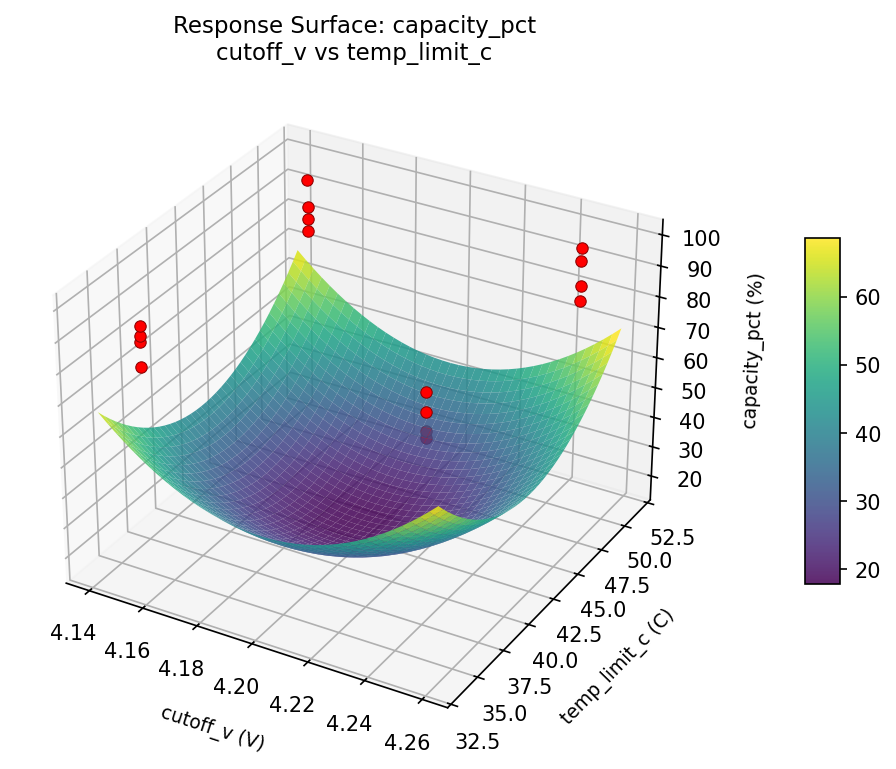
capacity pct cutoff v vs trickle pct
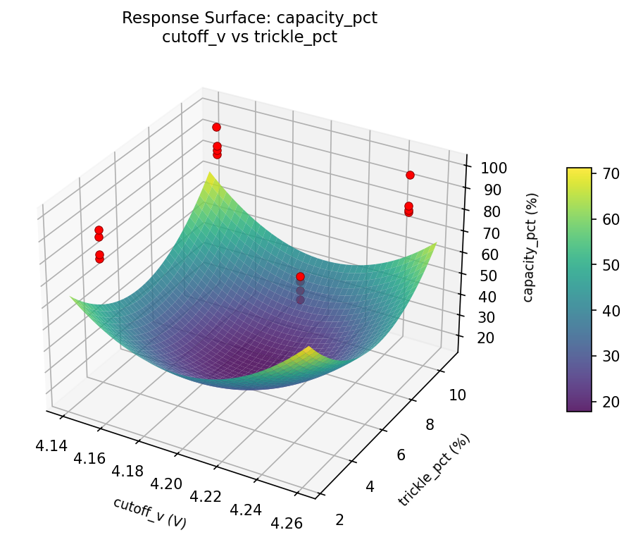
capacity pct trickle pct vs temp limit c
cycle life charge c vs cutoff v
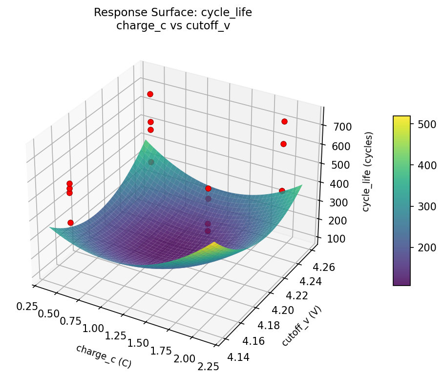
cycle life charge c vs temp limit c
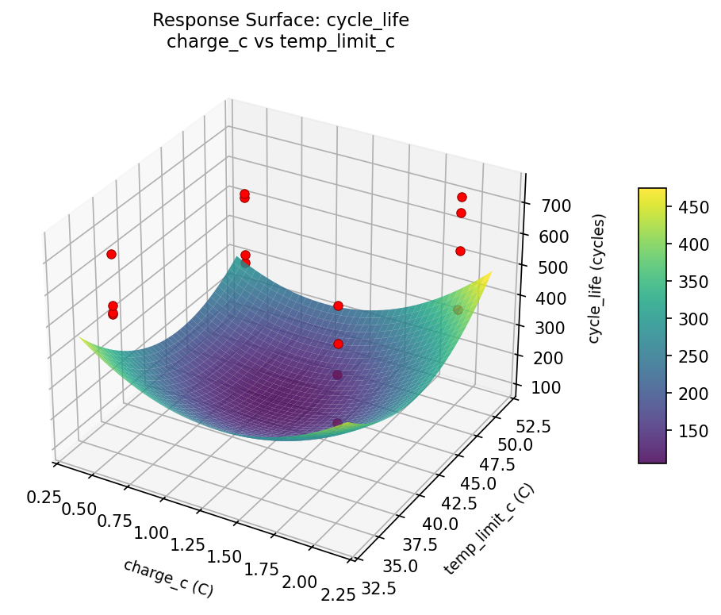
cycle life charge c vs trickle pct
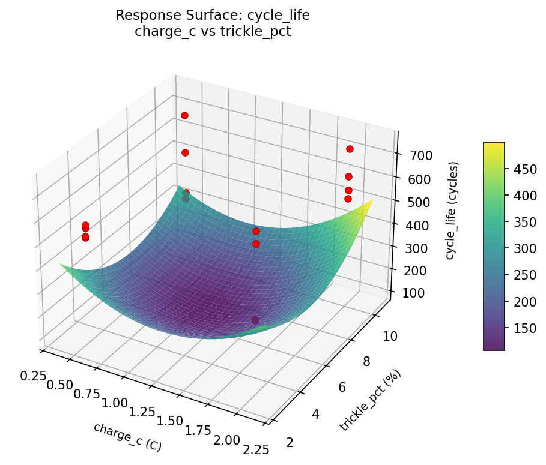
cycle life cutoff v vs temp limit c
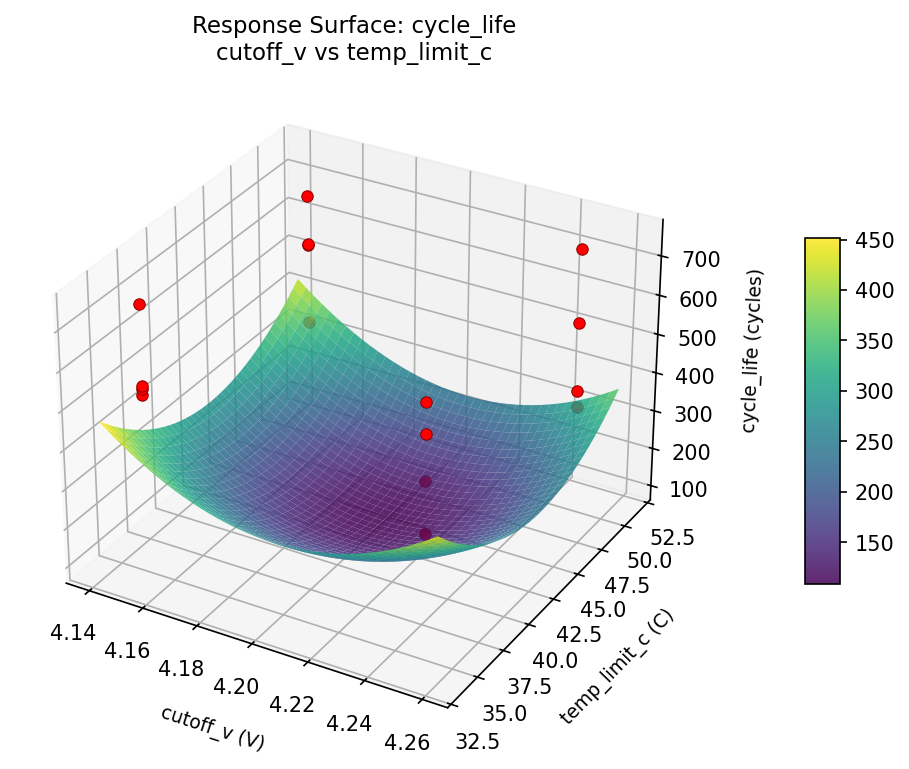
cycle life cutoff v vs trickle pct
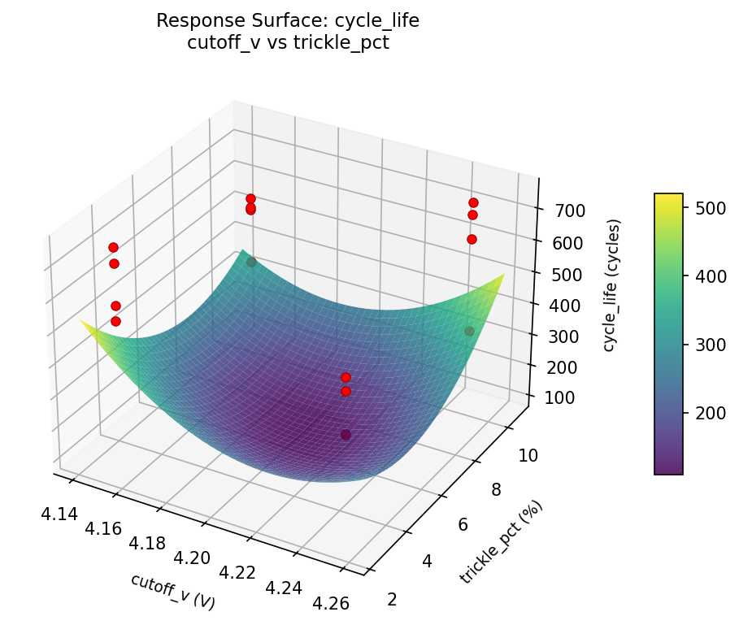
cycle life trickle pct vs temp limit c
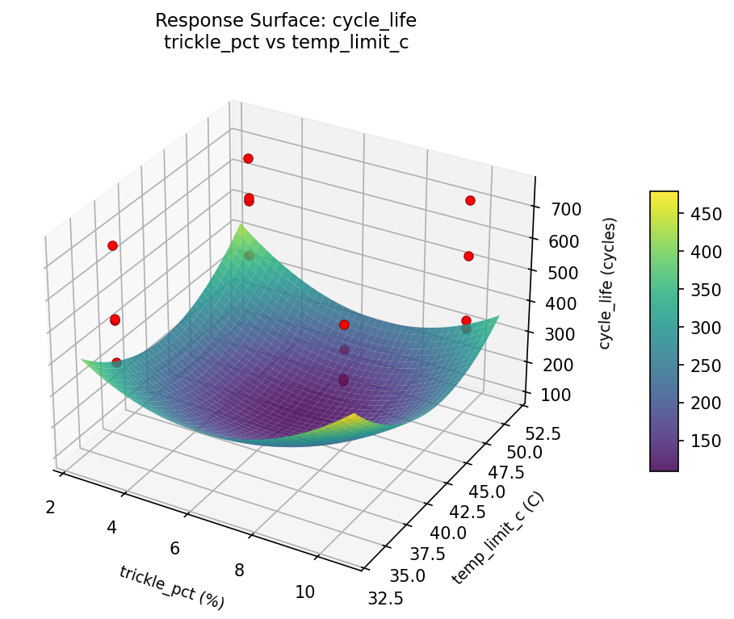